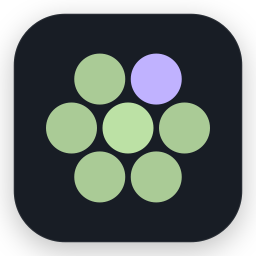
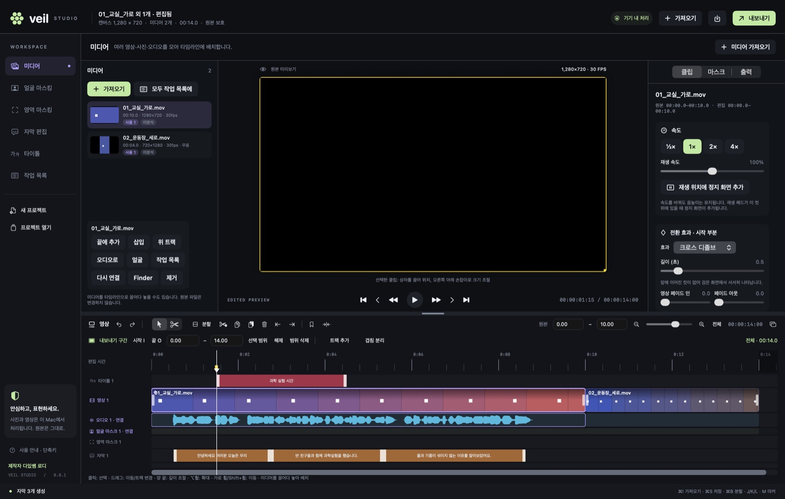
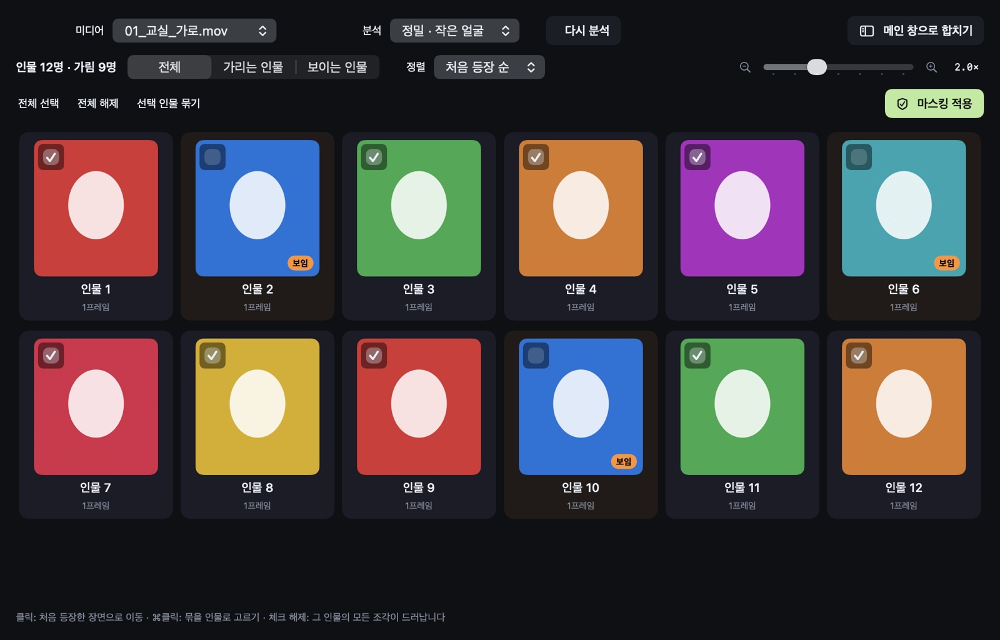
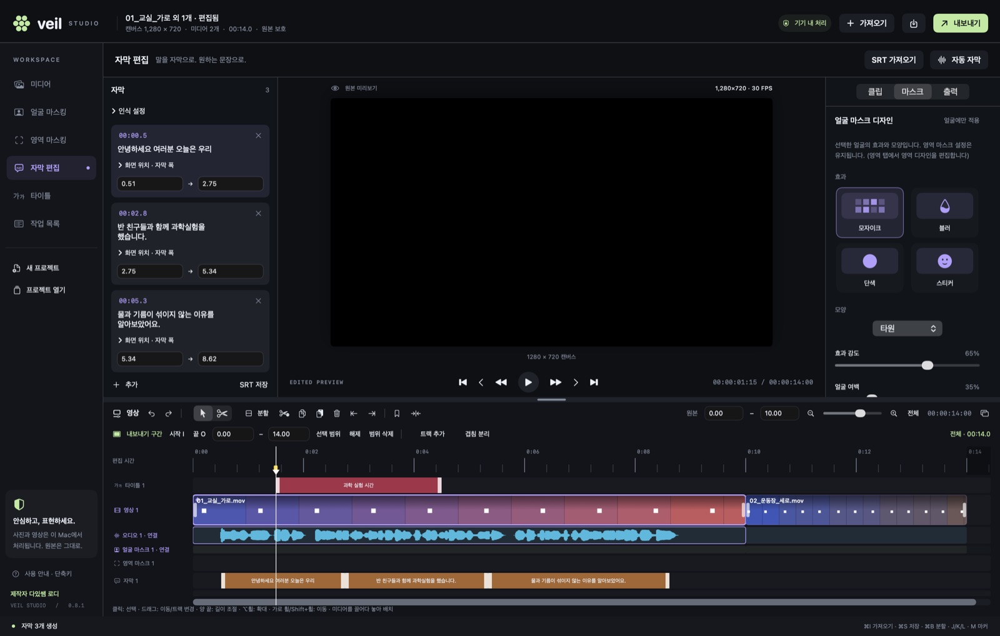
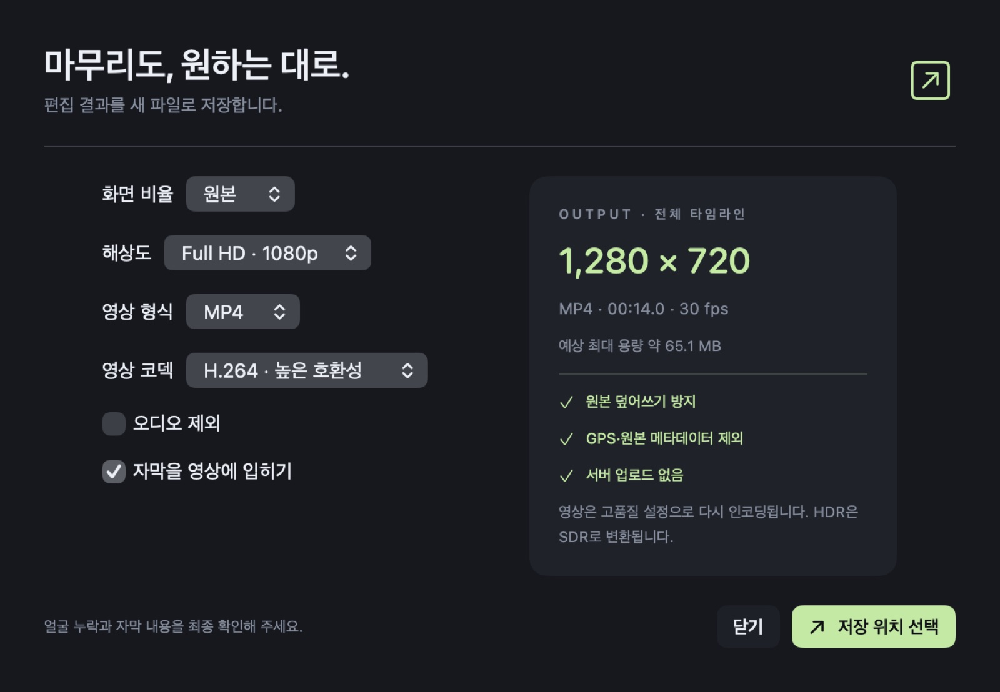
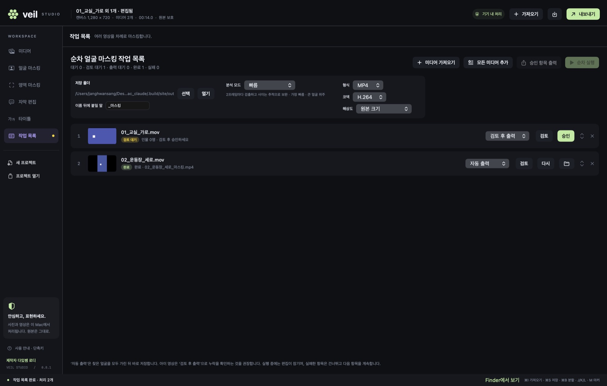

Veil Studio아이들이 나오는 수업·행사 영상에서 얼굴을 자동으로 찾아 가리고, 말소리를 자막으로 바꿔 줍니다. 공유하기 전에 꼭 필요한 일만 빠르고 확실하게.

모든 프레임에서 얼굴을 찾고, 놓친 프레임은 움직임 추적으로 이어 줍니다. 멀리 있는 작은 얼굴까지 찾는 정밀 모드가 기본.
찾은 얼굴을 사람 단위로 묶어 보여 줍니다. 가릴 사람만 체크하면 끝. 모자이크·블러·단색·스티커 중 선택.
Whisper large-v3-turbo를 앱에 내장. 말소리 구간만 인식해 음악·무음에서 엉뚱한 문장이 생기지 않습니다.
가로·세로 영상, 사진, 배경음악을 한 타임라인에서. 전환, 속도, 화면 속 화면, 색 보정, 타이틀까지.
영상 수십 개를 넣고 ‘순차 실행’. 검토 후 승인하거나, 찾은 얼굴을 모두 가려 자동 저장.
원본은 덮어쓰지 않고 새 파일로 저장. 위치(GPS) 등 메타데이터는 결과물에 복사하지 않습니다.


영상·사진·오디오를 창에 끌어다 놓거나 ⌘O. 여러 개를 고르면 순서대로 이어 붙인 프로젝트가 됩니다.
얼굴 마스킹 탭에서 얼굴 분석 ⇧⌘F. 분석 중에도 편집을 계속할 수 있습니다.
자막 편집 탭 → 자동 자막 ⇧⌘R. 노란 표시 문장부터 확인하세요. SRT 가져오기·저장 지원.
분할 ⌘B, 자르기 도구 B, 전환 ⌘T, 정지 화면 ⌥F, 타이틀 ⌃T. 타임라인은 ⌥⌘T로 별도 창 분리.
⌘E — 화면 비율(원본·16:9·9:16·1:1·4:3), 해상도(~4K), MP4/MOV, H.264/HEVC 선택. I/O로 일부 구간만도 가능.
꼭 확인하세요. 타임라인 얼굴 줄의 주황색 구간은 얼굴을 놓쳤을 수 있는 곳입니다. 재생해 확인하고, 부족하면 영역 마스킹으로 직접 가린 뒤 공유하세요.

미디어 탭에서 모두 작업 목록에 → 작업 목록 탭에서 저장 폴더를 고르고 순차 실행.
분석이 끝나면 검토 창에서 마스크가 적용된 영상을 재생해 보고 승인 → 승인 항목 출력.
찾은 얼굴을 모두 가려 바로 저장합니다. 결과는 원본이름_마스킹.mp4, 기존 파일은 덮어쓰지 않습니다.

| 기능 | Mac 0.8.1 | Win 0.7.0 |
|---|---|---|
| 얼굴 자동 마스킹 · 인물별 선택 · 영역 마스킹 | ● | ● |
| Whisper turbo 한국어 자막 | ● | ● |
| 여러 영상 이어 붙이기 · 기본 타임라인 편집 | ● | ● |
| 검출 끊김 추적·보간, 누락 의심 구간 표시 | ● | — |
| 순차 마스킹 작업 목록 · 검토 창 | ● | — |
| 전환 · 속도 · 화면 속 화면 · 타이틀 · 오디오 트랙 | ● | — |
| 타임라인·인물 창 분리(다른 모니터) | ● | — |
| 배경음악 제거 후 자막 인식 | — | ● |
Mac 0.8에서 저장한 .veilproject는 Windows 0.7에서 열 수 없습니다. 오갈 때는 결과 영상(MP4)으로 주고받으세요.
아니요. 얼굴 분석과 음성 인식은 모두 컴퓨터 안에서 처리되며, 인터넷 없이도 동작합니다.
아닙니다. 아주 작거나 옆을 보거나 가려진 얼굴은 놓칠 수 있습니다. 주황색 구간을 확인하고 영역 마스크로 보완하세요. 단색 마스크가 가장 안전합니다.
MOV·MP4·M4V, 사진 JPEG·PNG·HEIC·TIFF, 오디오 M4A·WAV·MP3·AIFF. MKV·WebM은 먼저 MP4로 변환하세요.
편집 내용은 자동 저장되며, 다시 열면 복구할지 묻습니다.